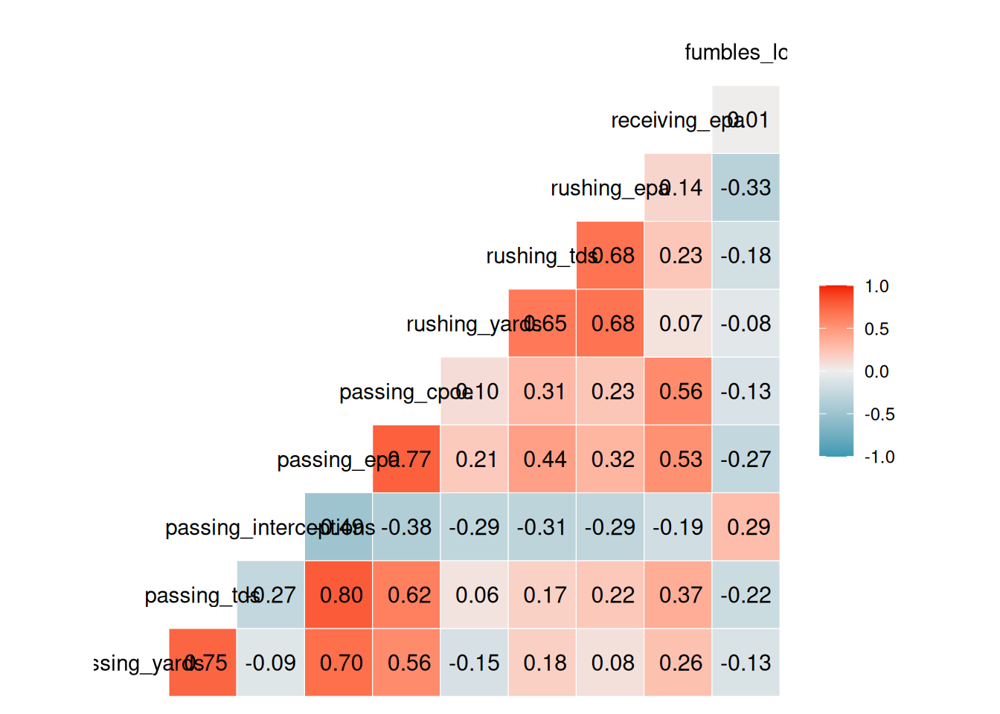
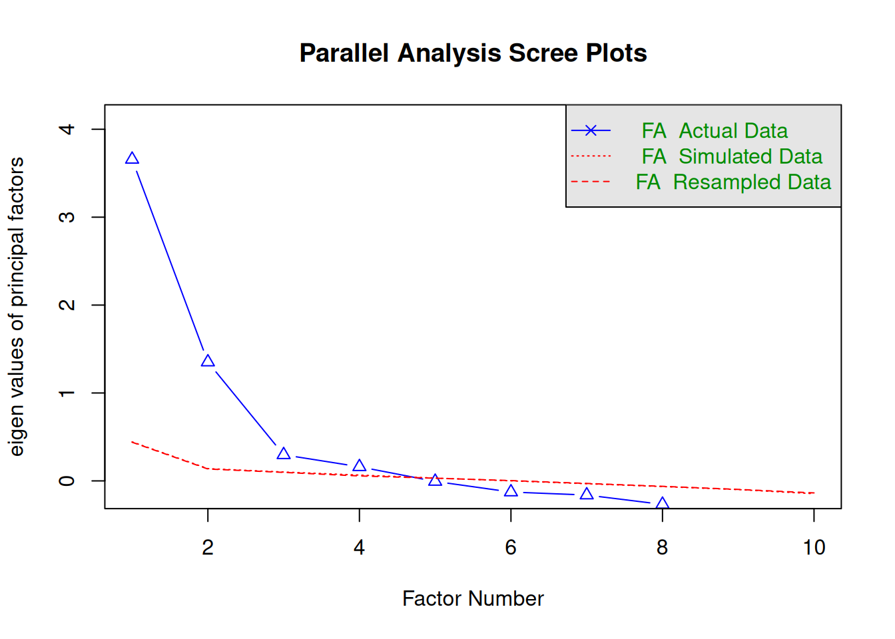
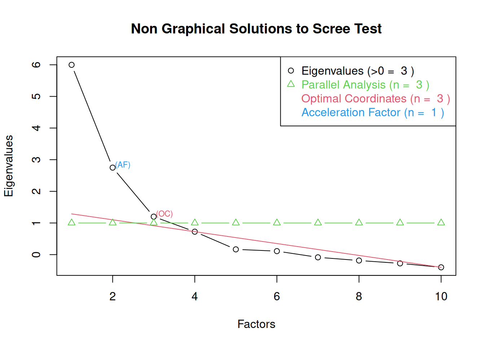
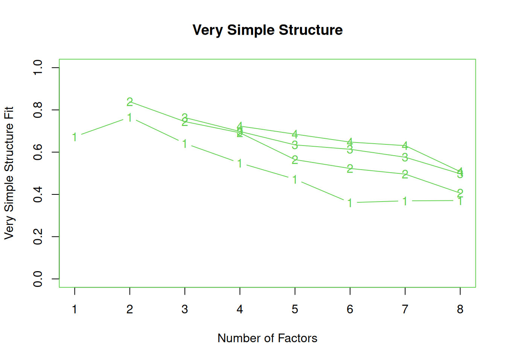
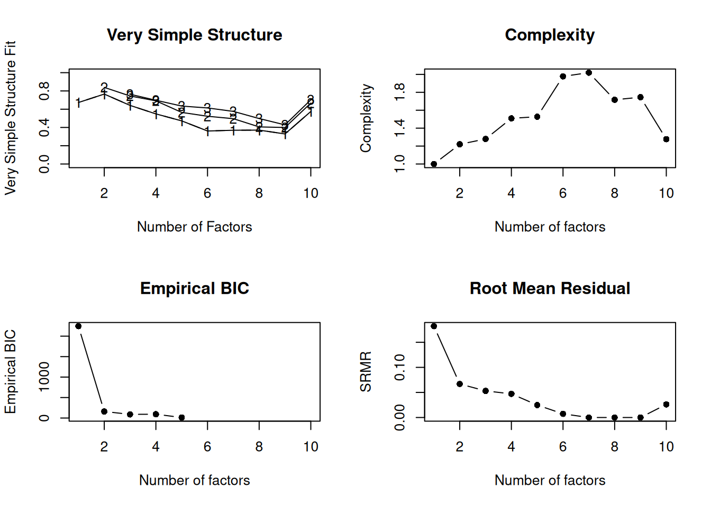

Code
#install.packages("remotes")
#remotes::install_github("DevPsyLab/petersenlab")
#remotes::install_github("FantasyFootballAnalytics/ffanalytics")
#update.packages(ask = FALSE)Jordan Wozniak
November 13, 2025
AI Disclosure: AI was not used.
Link to AI Transcript: not applicable
Background:
Method:
Results:
Discussion:
Conclusion:
Fantasy and real-life football analysts often look at simple box-score stats (yards, touchdowns, interceptions), but these raw numbers are noisy and influenced by schedule, injuries, and random variance. Using factor analysis, we can combine multiple offensive stats into one latent “overall offense quality” factor that may capture a team’s true offensive strength better than any single observed variable.
Does a one-factor CFA “team offense quality” factor, estimated from season-long offensive stats, predict which NFL teams score the most points per game in the following season?
Hypothesis: Teams with higher scores on the latent “team offense quality” factor in Year 1 will, on average, score more points per game in Year 2 than teams with lower factor scores.
Specific Prediction: A one-unit increase in the Year-1 offense factor will be associated with a statistically significant positive increase in Year-2 points per game.
Factor analysis reduces measurement error by pooling information across many correlated offensive statistics, so the latent offense factor should be a more reliable indicator of a team’s true offensive ability than any single stat. Factor analysis “aims to identify the optimal latent structure for a group of variables” and “simple, parsimonious factors that underlie the ‘junk’ … we observe” (Petersen, ch. 22).


Parallel analysis suggests that the number of factors = 4 and the number of components = NA 
Loading required namespace: GPArotation
Very Simple Structure
Call: psych::vss(x = nfl_actualStats_team_seasonal_reg[faVars], rotate = "oblimin",
fm = "mle")
VSS complexity 1 achieves a maximimum of 0.77 with 2 factors
VSS complexity 2 achieves a maximimum of 0.84 with 2 factors
The Velicer MAP achieves a minimum of 0.06 with 2 factors
BIC achieves a minimum of 96.31 with 5 factors
Sample Size adjusted BIC achieves a minimum of 112.19 with 5 factors
Statistics by number of factors
vss1 vss2 map dof chisq
1 0.67 0.00 0.111 35 2023.979768567
2 0.77 0.84 0.057 26 772.576429366
3 0.64 0.74 0.082 18 429.303192695
4 0.55 0.69 0.115 11 245.906297544
5 0.47 0.56 0.150 5 129.920592266
6 0.36 0.52 0.202 0 12.173729153
7 0.37 0.50 0.301 -4 0.000000068
8 0.37 0.41 0.470 -7 0.000000115
prob
1 0.000000000000000000000000000000000000000000000000000000000000000000000000000000000000000000000000000000000000000000000000000000000000000000000000000
2 0.000000000000000000000000000000000000000000000000000000000000000000000000000000000000000000000000000000000000000000000000000000000000000000000000041
3 0.000000000000000000000000000000000000000000000000000000000000000000000000000000069624717500356224620069774654487701719253983662882214907363205265612
4 0.000000000000000000000000000000000000000000000200980442396332375241984399781816647784415786566608683973890357616508974288803365673903411508772576120
5 0.000000000000000000000000024741543448097502830771908075814168513058116568839369031145835712843638470870288870173681061714887619018554687500000000000
6 NA
7 NA
8 NA
sqresid fit RMSEA BIC SABIC complex eChisq SRMR eCRMS eBIC
1 7.8 0.67 0.26 1789 1900 1.0 2479.407614320 0.18218544 0.207 2244
2 3.9 0.84 0.19 598 680 1.2 334.180479156 0.06688523 0.088 159
3 5.7 0.76 0.17 308 365 1.3 210.204829308 0.05304703 0.084 89
4 6.6 0.72 0.16 172 207 1.5 166.411030986 0.04719878 0.095 92
5 7.1 0.70 0.17 96 112 1.5 46.116373020 0.02484662 0.075 13
6 7.9 0.67 NA NA NA 2.0 4.015365361 0.00733166 NA NA
7 8.6 0.64 NA NA NA 2.0 0.000000015 0.00000045 NA NA
8 10.4 0.57 NA NA NA 1.7 0.000000044 0.00000077 NA NAWarning in GPFoblq(A, Tmat = Tmat, normalize = normalize, eps = eps, maxit =
maxit, : convergence not obtained in GPFoblq. 1000 iterations used.
Number of factors
Call: vss(x = x, n = n, rotate = rotate, diagonal = diagonal, fm = fm,
n.obs = n.obs, plot = FALSE, title = title, use = use, cor = cor)
VSS complexity 1 achieves a maximimum of 0.77 with 2 factors
VSS complexity 2 achieves a maximimum of 0.84 with 2 factors
The Velicer MAP achieves a minimum of 0.06 with 2 factors
Empirical BIC achieves a minimum of 12.51 with 5 factors
Sample Size adjusted BIC achieves a minimum of 112.19 with 5 factors
Statistics by number of factors
vss1 vss2 map dof chisq
1 0.67 0.00 0.111 35 2023.979768567
2 0.77 0.84 0.057 26 772.576429366
3 0.64 0.74 0.082 18 429.303192695
4 0.55 0.69 0.115 11 245.906297544
5 0.47 0.56 0.150 5 129.920592266
6 0.36 0.52 0.202 0 12.173729153
7 0.37 0.50 0.301 -4 0.000000068
8 0.37 0.41 0.470 -7 0.000000115
9 0.33 0.40 1.000 -9 0.000000000
10 0.57 0.67 NA -10 278.806388632
prob
1 0.000000000000000000000000000000000000000000000000000000000000000000000000000000000000000000000000000000000000000000000000000000000000000000000000000
2 0.000000000000000000000000000000000000000000000000000000000000000000000000000000000000000000000000000000000000000000000000000000000000000000000000041
3 0.000000000000000000000000000000000000000000000000000000000000000000000000000000069624717500356224620069774654487701719253983662882214907363205265612
4 0.000000000000000000000000000000000000000000000200980442396332375241984399781816647784415786566608683973890357616508974288803365673903411508772576120
5 0.000000000000000000000000024741543448097502830771908075814168513058116568839369031145835712843638470870288870173681061714887619018554687500000000000
6 NA
7 NA
8 NA
9 NA
10 NA
sqresid fit RMSEA BIC SABIC complex eChisq SRMR
1 7.8 0.67 0.26 1789 1900 1.0 2479.407614320178709022 0.182185439397
2 3.9 0.84 0.19 598 680 1.2 334.180479156282444819 0.066885231996
3 5.7 0.76 0.17 308 365 1.3 210.204829307936932992 0.053047026358
4 6.6 0.72 0.16 172 207 1.5 166.411030986047109081 0.047198778004
5 7.1 0.70 0.17 96 112 1.5 46.116373020035574370 0.024846617298
6 7.9 0.67 NA NA NA 2.0 4.015365361433366864 0.007331658591
7 8.6 0.64 NA NA NA 2.0 0.000000015212337373 0.000000451271
8 10.4 0.57 NA NA NA 1.7 0.000000044158486653 0.000000768859
9 12.2 0.49 NA NA NA 1.7 0.000000000000000013 0.000000000013
10 6.4 0.73 NA NA NA 1.3 51.162101302044341367 0.026170612421
eCRMS eBIC
1 0.207 2244
2 0.088 159
3 0.084 89
4 0.095 92
5 0.075 13
6 NA NA
7 NA NA
8 NA NA
9 NA NA
10 NA NAefa1factor_syntax <- '
# EFA Factor Loadings
efa("efa1")*f1 =~ passing_yards + passing_tds + passing_interceptions + passing_epa + passing_cpoe +
rushing_yards + rushing_tds + rushing_epa + receiving_epa + fumbles_lost
'
efa1factor_fit <- sem(
efa1factor_syntax,
data = nfl_actualStats_team_seasonal_reg,
information = "observed",
missing = "ML",
estimator = "MLR",
rotation = "geomin",
bounds = "standard",
meanstructure = TRUE,
em.h1.iter.max = 2000000
)Warning: lavaan->lav_data_full():
some observed variances are (at least) a factor 1000 times larger than
others; use varTable(fit) to investigatelavaan 0.6-20 ended normally after 38 iterations
Estimator ML
Optimization method NLMINB
Number of model parameters 30
Row rank of the constraints matrix 10
Rotation method GEOMIN OBLIQUE
Geomin epsilon 0.001
Rotation algorithm (rstarts) GPA (30)
Standardized metric TRUE
Row weights None
Number of observations 830
Number of missing patterns 3
Model Test User Model:
Standard Scaled
Test Statistic 1953.516 1551.452
Degrees of freedom 35 35
P-value (Chi-square) 0.000 0.000
Scaling correction factor 1.259
Yuan-Bentler correction (Mplus variant)
Model Test Baseline Model:
Test statistic 4746.952 3850.281
Degrees of freedom 45 45
P-value 0.000 0.000
Scaling correction factor 1.233
User Model versus Baseline Model:
Comparative Fit Index (CFI) 0.592 0.601
Tucker-Lewis Index (TLI) 0.475 0.488
Robust Comparative Fit Index (CFI) 0.608
Robust Tucker-Lewis Index (TLI) 0.496
Loglikelihood and Information Criteria:
Loglikelihood user model (H0) -36367.388 -36367.388
Scaling correction factor 1.111
for the MLR correction
Loglikelihood unrestricted model (H1) -35390.630 -35390.630
Scaling correction factor 1.191
for the MLR correction
Akaike (AIC) 72794.777 72794.777
Bayesian (BIC) 72936.420 72936.420
Sample-size adjusted Bayesian (SABIC) 72841.150 72841.150
Root Mean Square Error of Approximation:
RMSEA 0.257 0.228
90 Percent confidence interval - lower 0.247 0.220
90 Percent confidence interval - upper 0.267 0.237
P-value H_0: RMSEA <= 0.050 0.000 0.000
P-value H_0: RMSEA >= 0.080 1.000 1.000
Robust RMSEA 0.259
90 Percent confidence interval - lower 0.248
90 Percent confidence interval - upper 0.271
P-value H_0: Robust RMSEA <= 0.050 0.000
P-value H_0: Robust RMSEA >= 0.080 1.000
Standardized Root Mean Square Residual:
SRMR 0.150 0.150
Parameter Estimates:
Standard errors Sandwich
Information bread Observed
Observed information based on Hessian
Latent Variables:
Estimate Std.Err z-value P(>|z|) Std.lv Std.all
f1 =~ efa1
passing_yards 437.047 22.658 19.289 0.000 437.047 0.712
passing_tds 6.008 0.247 24.356 0.000 6.008 0.803
pssng_ntrcptns -2.226 0.183 -12.187 0.000 -2.226 -0.452
passing_epa 77.491 1.964 39.462 0.000 77.491 1.000
passing_cpoe 2.644 0.111 23.923 0.000 2.644 0.771
rushing_yards 84.898 14.131 6.008 0.000 84.898 0.238
rushing_tds 2.390 0.162 14.752 0.000 2.390 0.458
rushing_epa 9.900 0.992 9.977 0.000 9.900 0.328
receiving_epa 54.740 3.522 15.541 0.000 54.740 0.534
fumbles_lost -0.776 0.122 -6.374 0.000 -0.776 -0.242
Intercepts:
Estimate Std.Err z-value P(>|z|) Std.lv Std.all
.passing_yards 3818.375 21.291 179.338 0.000 3818.375 6.225
.passing_tds 23.222 0.260 89.370 0.000 23.222 3.102
.pssng_ntrcptns 14.930 0.171 87.354 0.000 14.930 3.032
.passing_epa 14.212 2.696 5.271 0.000 14.212 0.183
.passing_cpoe -0.097 0.130 -0.748 0.454 -0.097 -0.028
.rushing_yards 1842.735 12.378 148.866 0.000 1842.735 5.167
.rushing_tds 13.443 0.181 74.263 0.000 13.443 2.578
.rushing_epa -27.682 1.055 -26.240 0.000 -27.682 -0.918
.receiving_epa 128.374 3.588 35.780 0.000 128.374 1.253
.fumbles_lost 8.676 0.111 77.969 0.000 8.676 2.706
Variances:
Estimate Std.Err z-value P(>|z|) Std.lv Std.all
.pssng_yrd 185251.466 10332.014 17.930 0.000 185251.466 0.492
.pssng_tds 19.947 1.155 17.273 0.000 19.947 0.356
.pssng_ntr 19.289 1.193 16.166 0.000 19.289 0.796
.passing_p (lb) 0.000 82.550 0.000 0.000 0.000
.passng_cp 4.763 0.274 17.360 0.000 4.763 0.405
.rshng_yrd 119969.680 7134.581 16.815 0.000 119969.680 0.943
.rshng_tds 21.487 1.187 18.095 0.000 21.487 0.790
.rushing_p 811.339 43.463 18.667 0.000 811.339 0.892
.recevng_p 7497.003 351.031 21.357 0.000 7497.003 0.714
.fmbls_lst 9.675 0.499 19.374 0.000 9.675 0.941
f1 1.000 1.000 1.000
R-Square:
Estimate
passing_yards 0.508
passing_tds 0.644
pssng_ntrcptns 0.204
passing_epa 1.000
passing_cpoe 0.595
rushing_yards 0.057
rushing_tds 0.210
rushing_epa 0.108
receiving_epa 0.286
fumbles_lost 0.059Overall, the findings suggest that the latent “team offense quality” factor captures meaningful common variance across multiple offensive statistics that carries over into the next season’s points per game.
This is consistent with the textbook’s description of factor analysis and CFA as tools for estimating latent variables that can be used as predictors or outcomes in structural models, while dis-attenuating associations for measurement error.
Because the factor significantly predicted next-season scoring, our results support the hypothesis that combining many offensive stats into one latent factor is more informative than looking at individual metrics alone.
Strengths: A key strength of this study is the use of CFA to create a theoretically grounded latent “team offense quality” factor from multiple offensive indicators, rather than relying on a single noisy stat.
Limitations: The analysis is limited by only including offensive team statistics and ignoring defensive performance, special teams, schedule strength, injuries, and roster or coaching changes.
In this project, we used confirmatory factor analysis to build a one-factor “team offense quality” measure from season-long offensive statistics and then tested whether it predicts points per game in the next season. The offense-quality factor showed a positive, statistically significant association with next-season scoring, providing support for our hypothesis and for the textbook’s claim that latent factors can serve as useful predictors in structural equation models.
https://www.advancedfootballanalytics.com/2011/01
https://isaactpetersen.github.io/Fantasy-Football-Analytics-Textbook/factor-analysis.html
R version 4.5.2 (2025-10-31)
Platform: x86_64-pc-linux-gnu
Running under: Ubuntu 24.04.3 LTS
Matrix products: default
BLAS: /usr/lib/x86_64-linux-gnu/openblas-pthread/libblas.so.3
LAPACK: /usr/lib/x86_64-linux-gnu/openblas-pthread/libopenblasp-r0.3.26.so; LAPACK version 3.12.0
locale:
[1] LC_CTYPE=C.UTF-8 LC_NUMERIC=C LC_TIME=C.UTF-8
[4] LC_COLLATE=C.UTF-8 LC_MONETARY=C.UTF-8 LC_MESSAGES=C.UTF-8
[7] LC_PAPER=C.UTF-8 LC_NAME=C LC_ADDRESS=C
[10] LC_TELEPHONE=C LC_MEASUREMENT=C.UTF-8 LC_IDENTIFICATION=C
time zone: UTC
tzcode source: system (glibc)
attached base packages:
[1] stats graphics grDevices utils datasets methods base
other attached packages:
[1] knitr_1.50 lubridate_1.9.4 forcats_1.0.1 stringr_1.6.0
[5] readr_2.1.6 tibble_3.3.0 tidyverse_2.0.0 effectsize_1.0.1
[9] gpboost_1.6.4 R6_2.6.1 LongituRF_0.9 yardstick_1.3.2
[13] workflowsets_1.1.1 workflows_1.3.0 tune_2.0.1 tidyr_1.3.1
[17] tailor_0.1.0 rsample_1.3.1 recipes_1.3.1 purrr_1.2.0
[21] parsnip_1.3.3 modeldata_1.5.1 infer_1.0.9 ggplot2_4.0.1
[25] dplyr_1.1.4 dials_1.4.2 scales_1.4.0 broom_1.0.10
[29] tidymodels_1.4.1 powerjoin_0.1.0 missRanger_2.6.1 lavaan_0.6-20
[33] future_1.68.0 petersenlab_1.2.2
loaded via a namespace (and not attached):
[1] RColorBrewer_1.1-3 rstudioapi_0.17.1 jsonlite_2.0.0
[4] datawizard_1.3.0 magrittr_2.0.4 TH.data_1.1-5
[7] estimability_1.5.1 farver_2.1.2 nloptr_2.2.1
[10] rmarkdown_2.30 vctrs_0.6.5 minqa_1.2.8
[13] base64enc_0.1-3 htmltools_0.5.8.1 Formula_1.2-5
[16] parallelly_1.45.1 htmlwidgets_1.6.4 sandwich_3.1-1
[19] plyr_1.8.9 zoo_1.8-14 emmeans_2.0.0
[22] lifecycle_1.0.4 pkgconfig_2.0.3 Matrix_1.7-4
[25] fastmap_1.2.0 rbibutils_2.4 numDeriv_2016.8-1.1
[28] digest_0.6.39 GGally_2.4.0 colorspace_2.1-2
[31] furrr_0.3.1 Hmisc_5.2-4 labeling_0.4.3
[34] latex2exp_0.9.6 randomForest_4.7-1.2 RJSONIO_2.0.0
[37] timechange_0.3.0 compiler_4.5.2 withr_3.0.2
[40] htmlTable_2.4.3 S7_0.2.1 backports_1.5.0
[43] DBI_1.2.3 psych_2.5.6 ggstats_0.11.0
[46] MASS_7.3-65 lava_1.8.2 GPArotation_2025.3-1
[49] tools_4.5.2 pbivnorm_0.6.0 foreign_0.8-90
[52] future.apply_1.20.0 nnet_7.3-20 glue_1.8.0
[55] quadprog_1.5-8 DiagrammeR_1.0.11 nlme_3.1-168
[58] grid_4.5.2 checkmate_2.3.3 cluster_2.1.8.1
[61] reshape2_1.4.5 generics_0.1.4 gtable_0.3.6
[64] tzdb_0.5.0 class_7.3-23 hms_1.1.4
[67] data.table_1.17.8 pillar_1.11.1 mitools_2.4
[70] splines_4.5.2 lhs_1.2.0 lattice_0.22-7
[73] survival_3.8-3 tidyselect_1.2.1 lavaanPlot_0.8.1
[76] mix_1.0-13 reformulas_0.4.2 gridExtra_2.3
[79] stats4_4.5.2 xfun_0.54 hardhat_1.4.2
[82] timeDate_4051.111 visNetwork_2.1.4 stringi_1.8.7
[85] DiceDesign_1.10 yaml_2.3.10 boot_1.3-32
[88] evaluate_1.0.5 codetools_0.2-20 cli_3.6.5
[91] rpart_4.1.24 xtable_1.8-4 parameters_0.28.2
[94] Rdpack_2.6.4 nFactors_2.4.1.2 Rcpp_1.1.0
[97] globals_0.18.0 coda_0.19-4.1 parallel_4.5.2
[100] gower_1.0.2 bayestestR_0.17.0 GPfit_1.0-9
[103] lme4_1.1-37 listenv_0.10.0 viridisLite_0.4.2
[106] mvtnorm_1.3-3 ipred_0.9-15 prodlim_2025.04.28
[109] insight_1.4.2 rlang_1.1.6 multcomp_1.4-29
[112] mnormt_2.1.1